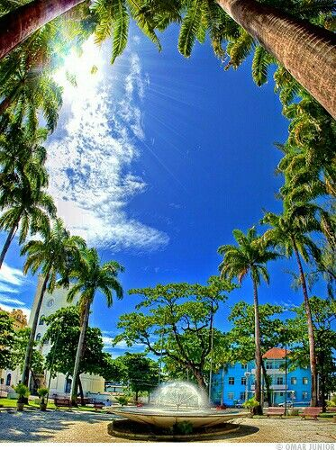
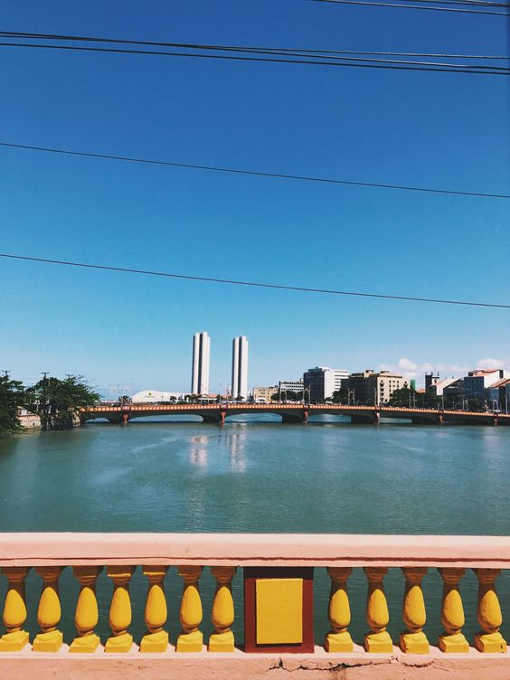

Recife Antigo - Outros Pontos Turísticos
Marco Zero
Outros Pontos Turísticos
Praça do Arsenal

A Praça do Arsenal é um lugar histórico...
Ponte Maurício de Nassau

A Ponte Maurício de Nassau é uma ponte icônica...